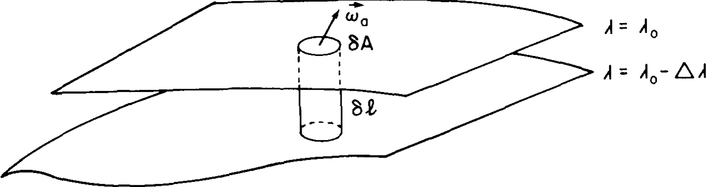

Large-scale geophysical flows are almost always influenced by vorticity, and the change of \(\omega\) due to the presence of planetary vorticity \(2\Omega\) is a central feature of geophysical fluid dynamics.
If the flow is baroclinic, Kelvin’s theorem is not conserved:
\(
\frac{d \Gamma_a}{dt} = \oint_C \frac{1}{\rho^2} \nabla \rho \times \nabla p \cdot d\mathbf{l}
\)
Using Stokes’ theorem:\(
\begin{aligned}
&\oint_C \mathbf{u} \cdot d\mathbf{l} = \iint_A \nabla \times \mathbf{u} \cdot \mathbf{n} \, dA \\
\qquad &\qquad \qquad \Downarrow \\
&\frac{d}{dt} \iint_A \boldsymbol{\omega}_a \cdot \mathbf{n} \, dA = \iint_A \frac{\nabla \rho \times \nabla p}{\rho^2} \cdot \mathbf{n} \, dA
\end{aligned}
\)
Consider a tiny circuit \(C\) which is sufficiently small \[\frac{d}{dt}(\boldsymbol{\omega}_a \cdot \mathbf{n} \, \delta A) = 0 \] in the surface of constant \(\lambda\), \(\delta A\) is the small surface element enclosed by \(C\), and \(\boldsymbol{\omega}_a\) is the mean value of \(\boldsymbol{\omega}_a\) over the differential surface
1 Pedlosky, J. (1982). Geophysical Fluid Dynamics. Springer study edition. Springer, Berlin, Heidelberg.